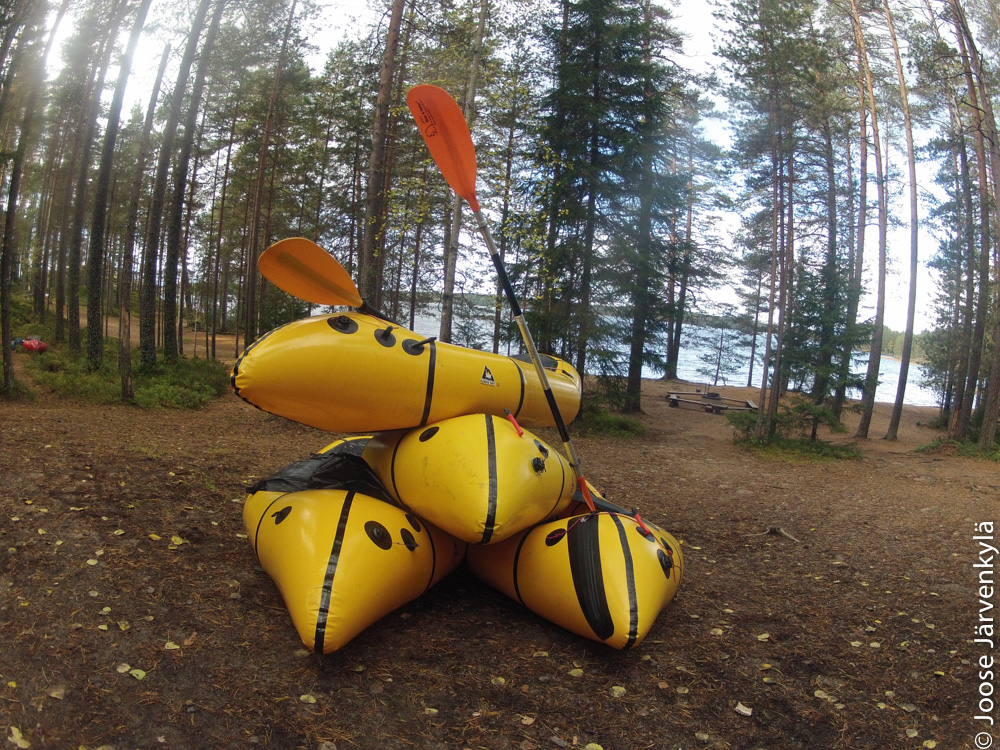
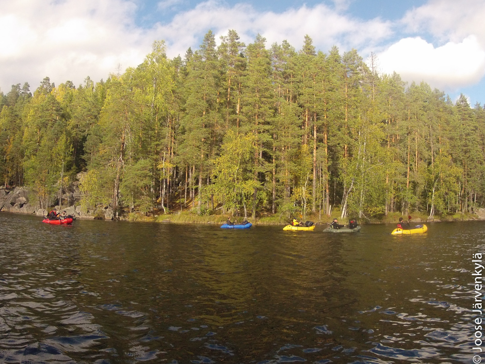
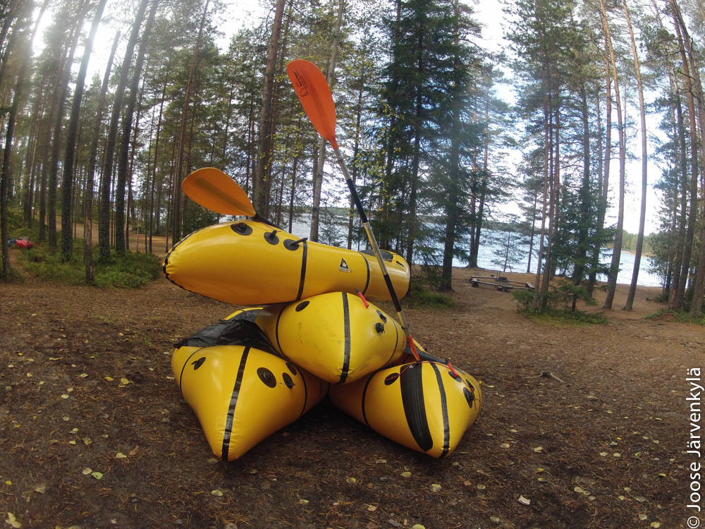
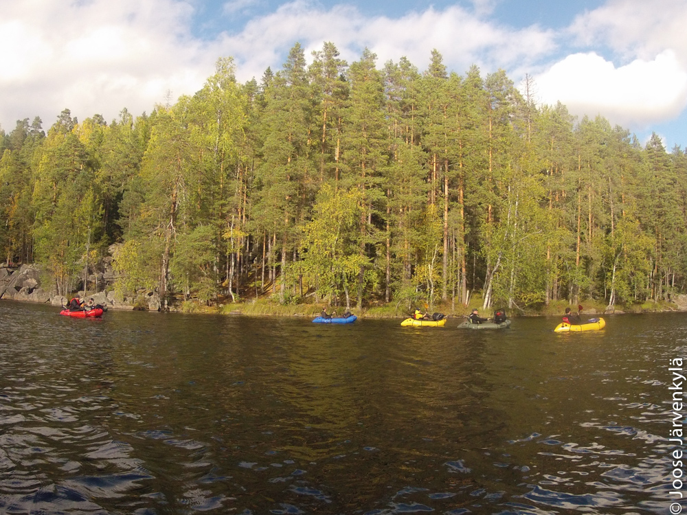

Wild
Packrafting
Koe seikkailusi meillä
Tarjoamme sekä yksityisille asiakkailla että matkatoimistoille packraft-retkipaketteja. Packraft on täytettävä vene/kajakki, joka on suunniteltu niin kevyeksi, että sitä voi kantaa pitkiä matkoja. Se on samalla tukeva vene, joka kestää koviakin kolhuja. Tämä yhdistelmä antaa ainutlaatuisia, tuhansien järvien maahan sopivia mahdollisuuksia yhdistettyihin vaellus- ja melontaretkiin.
Packraft voi lipua kirkkaissa erämaavesissä jopa 3-4 km tuntinopeudella huolimatta vain kahden kilon painosta. Melominen toimii myös kaupunkialueilla pakoreittinä arjen aherruksesta.
Valikoimamme sisältää erilaisia retkiohjelmia, lyhyestä kurssimuotoisesta melontailtapäivästä Vätsärin erämaahan kohdistuvaan seikkailuun.
Retket
4 tunnin packraft-kokeilu Pyhäjärvellä
Lähtöpiste kokeilulle on lähellä Tampereen keskustaa. Retkellä
harjoitellaan melomista packraftillä, kesto 4 tuntia.
Hinta on 60 euroa, siihen kuuluu:
ammattiopas, packraftingvarusteet, ateriat (nuotiolla tehty lounas
läheisessä saaressa)
Vaativuus 1 (sopii aloittelijoille ja ensikertalaislle)
Alaikäraja 15 vuotta, vaatii kohtuullista fyysistä kuntoa
Varaus 2 viikkoa ennen lähtöaikaa
2 yön retki Isojärven kansallispuistossa
Isojärven kansallispuistossa Kuhmoisissa voi tutustua ikivanhoihin
rotkolaaksoihin melomalla ja vaeltamalla. Retki sopii kaikille,
kokemusta ei vaadita. Sen kesto on noin 48 tuntia (iltapäivä -
iltapäivä). Ensimmäinen yö nukutaan teltassa ja toinen mökissä.
Varaus 2 viikkoa ennen lähtöaikaa.
Hinta on 350 euroa, siihen kuuluu:
ammattiopas, leirintävarusteet, packrafting -varusteet, makuupussit,
ateriat (aamiaiset, lounaat ja päivälliset) kuljetus Tampereelta,
ravintolaruokailu ja aito suomalainen sauna matkan lopuksi
3 yön retki Helvetinjärvelle
Tutustu packrating -melontaan ainutlaatuisessa Helvetinjärven
kansallispuistossa: Retki sopii jokaiselle, aikaisempaa kokemusta ei
vaadita. Kaikki varusteet kuuluvat retkipakettiin.
Vaativuus 1 (sopii aloittelijoille ja ensikertalaisille).
Alaikäraja 15 vuotta, vaatii kohtuullista fyysistä kuntoa.
Varaus 2 viikkoa ennen lähtöaikaa.
Pitkän viikonlopun aloitamme Kovero-järveltä, josta siirrymme
hitaasti koilliseen Luoma-järvelle, Helvetinjärvelle ja lopuksi
Haukanhiedan hiekkadyynille . Jos veden pinta on riittävän korkea,
laskemme alas pitkin Haukka-jokea. Matkalla näemme jylhiä kallioita,
kuuluisan Helvetinkolun kurun, ikiaikaisia metsiä ja ainutkertaisen
Haukanhiedan dyynin. Nautimme maistuvia aterioita leirinuoriolla,
nukumme teltassa tai laavussa (jos haluat kokeilla), tutustumme
paikalliseen luontoon ja kulttuurihistoriaan ja, mikä parasta,
kaikki kuuluu pakettiin, voit tulla mukaan ilman muita varusteita
kuin vaatteet. Retken lopuksi saat kyydin Tampereen keskustaan,
jossa voit nauttia saunasta ja hyvästä ateriasta. Hinta on 400
euroa, siihen kuuluu: ammattiopas, leirintävarusteet, packrafting
-varusteet, makuupussit, ateriat (aamiaiset, lounaat ja
päivälliset), kuljetus Tampereen rautatieasemalta tai Pirkkalan
lentoasemalta, ravintolaruokailu ja aito suomalainen sauna matkan
lopuksi
Vätsärin erämaaseikkailu (10 päivää, 200 km)
10 päivän vaativa vaellus- ja packrafting-retki kaukaisella
erämaa-alueella. Pakettiin kuuluvat kaikki tarvittavat varusteet ja
ateriat. Matkan lopuksi on yöpyminen kotoisassa erämaahotellissa.
Lentokenttäkuljetukset kuuluvat pakettiin.
Vätsärin erämaa-alue on pienten järvien, mäntymetsien ja soiden
mosaiikki. Se antaa hiljaisuuden ja rauhan etsijälle vertaansa
vailla olevan kokemuksen. Luonnon monimuotoisuuden takia alue ei
sovellu pelkästään vaellukseen tai melontaan. Packrafteillä alue
näyttää parhaat puolensa: koskemattoman luonnon kauneuden,
hiljaisuuden ja ainutkertaisen kalastusmahdollisuudet.
Vaativuus 3-4/5 (pitkän ajan ja alueen eristyneisyyden takia)
Keskimääräinen päivittäinen matka (kävellen tai meloen) noin 20
km
Sopii henkilöille, jotka ovat täyttäneet 18 vuotta ja joilla on hyvä
fyysinen kunto sekä jonkin verran vaelluskokemusta.
Varaus 2 viikkoa ennen lähtöaikaa. Tule testaamaan rajojasi
erämaassa vailla vertaa!
Hinta on 1650 euroa, siihen kuuluu:
ammattiopas, leirintävarusteet, packrafting -varusteet, makuupussit,
ateriat (aamiaiset, lounaat ja päivälliset), kuljetus Ivalon
lentoasemalta, ravintolaruokailu ja aito suomalainen sauna sekä
hotelliyöpyminen matkan lopuksi
Varaa matka
Kuvagalleria


 


